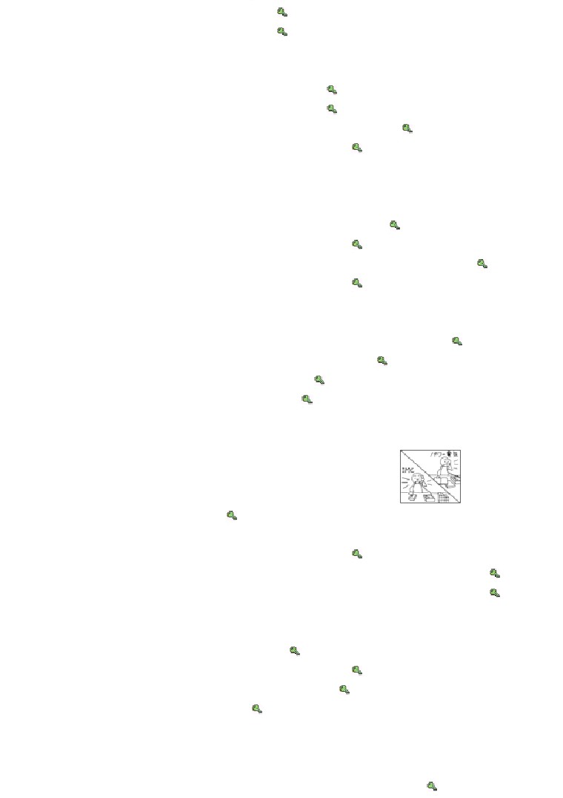

第５０課
課:50 (頁:1/9)
ことば
1. まいります
Ⅰ
参ります
去，來（いきます、きます的謙遜
語）
2. おります Ⅰ
在（います的謙遜語）
3. いただきます
Ⅰ
吃，喝，收到（たべます、のみま
す、もらいます的謙遜語）
4. もうします Ⅰ
申します
說（いいます的謙遜語）
5. いたします Ⅰ
做（します的謙遜語）
6. はいけんします Ⅲ
拝見します
看（みます的謙遜語）
7. ぞんじます Ⅱ
存じます
知道（しります的謙遜語）
8. うかがいます
Ⅰ
伺います
問，聽到，拜訪（ききます、いきま
す的謙遜語）
9. おめに かかります Ⅰ
お目に かかります
見到（あいます的謙遜
語）
10. ございます Ⅰ
有（あります的禮貌說法）
11. ～で ございます
是（です的禮貌說法）
12. わたくし
私
我（わたし的謙遜語）
13. ガイド
導遊
14. おたく
お宅
府上（稱他人的家）
15. こうがい
郊外
郊外
16. アルバム
相簿
17. さらいしゅう
さ来週
下下週
18. さらいげつ
さ来月
下下個月
19. さらいねん
さ来年
後年
20. はんとし
半年
半年
21. さいしょに
最初に
最初
22. さいごに
最後に
最後
23. ただいま
ただ今
剛才
え ど とう きょう はく ぶつ かん
24.
※江戸東京博物館
江戶東京博物館
かい わ
会話
きんちょう
緊張します Ⅲ
緊張
ほう そう
課:50 (頁:2/9)
放送します Ⅲ
播放
と
撮ります［ビデオに～］Ⅰ
攝，錄〔影〕
しょう きん
賞金
獎金
し ぜん
自然
自然
きりん
長頸鹿
ぞう
象
象
ころ
時候，時期
ゆめ
かないます［夢が～］Ⅰ
實現〔夢想〕
ひとこと よろしいでしょうか。
我能說一句話嗎﹖
きょうりょく
協力します Ⅲ
協力，合作，協助
こころ
心から
衷心
かん しゃ
感謝します Ⅲ
感謝
よ
もの
…読み物…………………………………………………………………
れい
［お］礼
感謝，致謝
はい けい
拝啓
拜
うつく
美しい
美麗
げん き
お元気で いらっしゃいますか。
您好嗎？（おげんきですか的尊敬
語
めい わく
迷惑を かけます Ⅱ
添麻煩了
い
生かします Ⅰ
活用
しろ
［お］城
城堡
けい ぐ
敬具
謹此
※ミュンヘン
慕尼黑（德國）
……………………………………………………………………………………………
ぶん けい
文型
こん げつ
おく
1. 今月の スケジュールを お送りします。
わたくし
まい
2.
私 は アメリカから 参りました。
れい ぶん
例文
おも
も
1. 重そうですね。 お持ちしましょうか。
ねが
…すみません。 お願いします。
み
い
2. ガイドさん、ここを 見た あとで、どこへ 行くんですか。
え ど とうきょう はく ぶつ かん
あん ない
…江戸東京博物館へ ご案内します。
とうちゃく
じ
むか
課:50 (頁:3/9)
グプタさんの 到着は 2時ですね。 だれか 迎えに
3.
い
行くんですか。
わたくし
まい
…はい、 私 が 参ります。
か ぞく
4. ご家族は どちらに いらっしゃいますか。
…ニューヨークに おります。
きっ ぷ
はい けん
5. ちょっと 切符を 拝見します。
…はい。
どうも ありがとう ございました。
ゆうしょう
6. ミラーさんが スピーチコンテストで 優勝したのを
ぞん
ご存じですか。
ぶ ちょう
うかが
…はい、部長から 伺いました。
7. こちらは ミラーさんです。
はじ
もう
…初めまして。 ミラーと 申します。
ねが
どうぞ よろしく お願いいたします。
ちか
でん わ
8. この 近くに 電話が ありますか。
かい だん
よこ
…はい、あちらの 階段の 横に ございます。
かい わ
会話
こころ
かん しゃ
心から 感謝いたします
し かい しゃ
ゆうしょう
司会者：
優勝 おめでとう ございます。
すばらしい スピーチでした。
ミラー：
ありがとう ございます。
し かい しゃ
きん ちょう
司会者：
緊張なさいましたか。
きん ちょう
ミラー：
はい、とても 緊張いたしました。
し かい しゃ
ほう そう
ぞん
司会者：
テレビで 放送される ことは ご存じでしたか。
と
りょうしん
ミラー：
はい。 ビデオに 撮って、アメリカの 両親にも
み
おも
見せたいと 思って おります。
し かい しゃ
しょうきん
なん
つか
司会者：
賞金は 何に お使いに なりますか。
どう ぶつ
す
こ
ミラー：
そうですね。 わたしは 動物が 好きで、子どもの ときから
い
ゆめ
アフリカへ 行くのが 夢でした。
し かい しゃ
い
司会者：
じゃ、アフリカへ 行かれますか。
し ぜん
なか
ぞう
み
ミラー：
はい。 アフリカの 自然の 中で きりんや 象を 見たいと
おも
思います。
し かい しゃ
こ
ゆめ
司会者：
子どもの ころの 夢が かなうんですね。
さい ご
ミラー：
はい。 あのう、最後に ひとこと よろしいでしょうか。
し かい しゃ
課:50 (頁:4/9)
司会者：
どうぞ。
たい かい
で
きょうりょく
ミラー： この スピーチ大会に 出る ために、いろいろ ご協力
みな さま
こころ
かん しゃ
くださった 皆様に 心から 感謝いたします。
れん しゅう
練習 Ａ
わたくし
1.
私 が
かさ
を お
かし
します。
ぶちょう
おくり
コーヒー
いれ
わたくし
2.
私 が
きょうの よてい
を ご
せつめい
します。
しゅっぱつじかん
れんらく
こうじょう
あんない
けん じょう ご
3.
謙譲語
いきます
まいります
きます
います
おります
たべます
いただきます
のみます
もらいます
みます
はいけんします
いいます
もうします
します
いたします
ききます
うかがいます
（ うちへ ） いきます
しって います
ぞんじて おります
しりません
ぞんじません
あいます
おめに かかります
せん せい
たく
4.
きのう
先生の お宅へ
うかがいました。
せん せい
おく さま
先生の 奥様に
おめに かかりました。
けっ こん しき
しゃ しん
結婚式の 写真を
はいけんしました。
わたくし
5.
私 は
ミラーと
もうします。
アメリカから
まいりました。
IMCに
つとめて おります。
れん しゅう
練習 Ｂ
れい
てつだ
てつだ
1.
例： 手伝います →
お手伝いしましょうか。
ちゃ
1)
お茶を いれます →
も
2)
かばんを 持ちます →

か
課:50 (頁:5/9)
3)
ボールペンを 貸します →
えき
くるま
おく
4)
駅まで 車で 送ります →
れい
かい しゃ
なか
あん ない
かい しゃ
なか
あん ない
2.
例： 会社の 中を 案内します →
会社の 中を ご案内します。
さい しょ
い とう せん せい
しょうかい
1)
最初に 伊藤先生を 紹介します →
しょく じ
よう い
2)
お食事は こちらで 用意します →
よ てい
か
ば あい
れん らく
3)
予定が 変わった 場合は、すぐ 連絡します →
しょうたい
4)
クリスマスパーティーに 招待します →
れい
か
3.
例： コーヒーを いれます・こちらに 掛けます
か
→ コーヒーを おいれしますので、こちらに お掛け ください。
よ
ま
1)
タクシーを 呼びます・しばらく 待ちます →
しゃ しん
と
にわ
あつ
2)
写真を 撮ります・庭に 集まります →
ご ご
よ てい
し
へ や
はい
3)
午後の 予定を 知らせます・こちらの 部屋に 入ります →
ふう とう
わた
なか
たし
4)
封筒を 渡します・中を 確かめます →
れい
ど よう び
き
ど よう び
まい
4.
例： 土曜日に また 来ます →
土曜日に また 参ります。
たく
りょう り
た
1)
シュミットさんの お宅で ドイツ料理を 食べました →
らい げつ
とうきょう
こう がい
ひ
こ
2)
さ来月 東京の 郊外に 引っ越しします →
じ
い
3)
3時ごろ そちらへ 行きます →
ぼう えき がい しゃ
つと
4)
貿易会社に 勤めて います →
れい
やま だ
いま
で
5.
例： 山田さんは いますか （ 今 出かけて います ）
やま だ
→ 山田さんは いらっしゃいますか。
いま
で
……今 出かけて おります。
しゅっぱつ
1)
グプタさんは いつ アメリカヘ 出発しますか
（ あさって ） →
なか むら か ちょう
2)
中村課長は いますか
いま
かん こく
しゅっちょう
（ 今 韓国へ 出張して います ） →
き
き
3)
ミラーさんは きょう 来ますか （ きょうは 来ません ） →
まつ もと ぶ ちょう
なん じ
し てん
い
じ
4)
松本部長は 何時に 支店へ 行きましたか （ 11時ごろ ） →
れい
ちゃ
の
ちゃ
6.
例： お茶を 飲みます →
お茶を いただいても よろしいでしょうか。
み
1)
この アルバムを 見ます →
じ
たく
い
2)
きょう 3時ごろ お宅へ 行きます →
3)
この パンフレットを もらいます →
き
4)
ちょっと 聞きます →
れい
にち よう び
てん らん かい
7.
例： 日曜日 どちらへ いらっしゃいますか。（ 展覧会 ）
てん らん かい
まい
→ 展覧会に 参ります。
な まえ
なん
1)
お名前は 何と おっしゃいますか。（ ミラー ） →
に ほん
ねん
課:50 (頁:6/9)
2)
いつ 日本へ いらっしゃいましたか。（ 3年まえ ） →
に ほん ご
べんきょう
はん とし
3)
どのくらい 日本語を 勉強なさいましたか。（ 半年 ） →
に ほん
しゅしょう
な まえ
ぞん
4)
日本の 首相の 名前を ご存じですか。（ はい ） →
れん しゅう
練習 Ｃ
おも
1. Ａ: 重そうですね。
も
お持ちしましょうか。
ねが
すみません。 お願いします。
Ｂ:
いそが
1) 忙しそうです
てつだ
手伝います
あめ
2)
雨です
かさ
か
傘を 貸します
りょう り
め
あ
2. Ａ: ベトナム料理を 召し上がった ことが ありますか。
Ｂ: いいえ、ありません。
こん ど
わたくし
あん ない
Ａ: では、今度 私 が ご案内します。
か ぶ き
み
1) 歌舞伎を 見ます
しょうたい
招待します
まつ もと ぶ ちょう
あ
2)
松本部長に 会います
しょうかい
紹介します
3. Ａ: はい、IMCで ございます。
た なか
もう
Ｂ: 田中と 申しますが、ミラーさんは いらっしゃいますか。
いま
で
Ａ: ミラーは ただ今 出かけて おりますが……。
でん わ
Ｂ: そうですか。 じゃ、また お電話します。
きん よう び
やす
1) 金曜日まで 休みを
と
取ります
いま
せき
はず
2) ただ今 席を 外します
もん だい
問題
れい
もう
1.
1)
…例： マイク・ミラーと申します。
れい
とうきょう
す
2)
…例： 東京に住んでおります。
れい
はん とし
べんきょう
3)
…例： 半年ぐらい勉強いたしました。
れい
ぞん
4)
…例： はい、存じております。
れい
5)
…例： はい、おります。
2.
1)
( ○ )
2)
( ○ )
3)
( × )
4)
( ○ )
5)
( ○ )
れい
に もつ
おも
も
3. 例1： お荷物、重そうですね。（ お持ちし ） ましょう。
れい
きょう と
あん ない
例2： あしたは 京都を （ ご案内し ） ます。
あん ない
おく
しょうかい
と
か
も
れん らく
課:50 (頁:7/9)
案内します 送ります 紹介します 取り替えます 持ちます 連絡します
しょう かい
1)
（ ご紹介し ）ます。こちらは IMCの マイク・ミラーさんです。
あ
ば あい
と
か
2)
サイズが 合わない 場合は、（ お取り替えし ）ます。
くるま
くう こう
おく
3)
車で 空港まで （ お送りし ）ます。
か ちょう
わたくし
じ かん
ば しょ
れん らく
4)
課長には 私 が パーティーの 時間と 場所を （ ご連絡し ）ます。
れい
とうきょう
4.
例： いつ 東京へ いらっしゃいますか。
らいしゅう
まい
…来週 ( 参ります ）。
たく
1)
あしたは お宅に いらっしゃいますか。…はい、（ おります ）。
かえ
ぞん
2)
シュミットさんが ドイツヘ 帰られたのを ご存じですか。
ぞん
…いいえ、（ 存じませんでした ）。
なに
め
あ
3)
何を 召し上がりますか。…サンドイッチを （ いただきます ）。
らいしゅう
はっぴょう
わたくし
はっぴょう
4)
来週は どなたが 発表なさいますか。… 私 が （ 発表いたします ）。
れい
5. Ａ:
はい、IMC（ 例： で ございます ）。
た なか
もう
Ｂ: 田中と （ 申します ）が、
ミラーさんは （ いらっしゃいます ）か。
いま
で
Ａ:
ミラーは ただ今 出かけて （ おります ）が……。
なん じ
もど
もど
Ｂ: 何時ごろ （ お戻りになります （ 戻られます ） ）か。
じ
もど
Ａ:
3時ごろ 戻りますが。
じ
いち ど
でん わ
Ｂ: じゃ、3時ごろ もう 一度 （ お電話します ）。
れい
て がみ
6.
お礼の 手紙
はい けい
拝啓
いま
はな
さ
うつく
き せつ
今 ドイツは いろいろな 花が 咲いて、美しい 季節です。
げん き
お元気で いらっしゃいますか。
に ほん
せ わ
日本では ほんとうに お世話に なり、ありがとう ございました。
に ほん
ねん
はや
す
に ほん
い
日本での 2年は とても 速く 過ぎました。 日本へ 行った ばかりの
な
おお
みな さま
めい わく
とき、わからない ことや 慣れない ことが 多くて、皆様に ご迷惑を
しん せつ
おかけしましたが、ほんとうに 親切に して いただきました。
たの
し ごと
おかげさまで 楽しく 仕事が できました。
に ほん
けい けん
い
あたら
し ごと
ミュンヘンでは 日本での 経験を 生かして、新しい 仕事に
おも
チャレンジしたいと 思って おります。
ゆう めい
び じゅつ かん
ふる
しろ
いち ど
こちらには 有名な 美術館や 古い お城が あります。 ぜひ 一度
もり
す
よう い
いらっしゃって ください。 森さんが お好きな ビールを ご用意して
ま
お待ちして おります。
あ
ひ
たの
みな さま
では、また お会いできる 日を 楽しみに して おります。 皆様にも
つた
どうぞ よろしく お伝え ください。
けい ぐ
敬具
がつ にち
課:50
(頁:8/9)
5月30日
カール・シュミット
もり まさ お さま
森 正夫様
に ほん
か
て がみ
1)
（ × ）これは シュミットさんが 日本で 書いた 手紙です。
ねん
かえ
2)
（ × ）シュミットさんは 2年まえに ドイツヘ 帰りました。
し ごと
3)
（ ○ ）シュミットさんは これから ミュンヘンで 仕事を します。
もり
あ
ひ
たの
4)
（ ○ ）シュミットさんは 森さんに また 会える 日を 楽しみに
して います。
文法
けん じょう ご
１. 謙譲語 （謙遜語）
「けんじょうご」是說話人為了對聽話人或話題中出現的人物表示敬意，將自
身行為貶低的一種表達方式。敬意的對象為上面的人或「ソトの ひと」。另
外，說話者對「ソトの ひと」說起「ウチの ひと」的時候，也用「けんじょ
うご」。
1)
お／ご～します
(1)
お動詞（Ⅰ、Ⅱ類） ます 形 します
おも
も
①重そうですね。 お 持ちしましょうか。
看起來蠻重的，我來拿吧。
わたくし
しゃ ちょう
し
②私が 社長に スケジュールを お 知らせします。
我來報告總經理日程安排。
あに
くるま
おく
③兄が 車で お 送りします。
家兄開車送您。
①是對聽者，②是對話題中的人物貶低說話人自身行為的表達方式。此外，③
的行為者不是說話人自己，而是說話人的「ウチの ひと」。
還有，這種表達方式像「みます」「います」這樣，ます形是單音節的動詞
時不能使用。
(2)
ご動詞（Ⅲ類）
え ど とう きょう はく ぶつ かん
あん ない
④江戸 東京 博物館へ ご 案内します。
我帶您去江戶東京博物館。
よ てい
せつ めい
⑤きょうの 予定を ご 説明します。
向大家說明今天的行程。
這個形式用於第三類動詞，除上面例子中的動詞以外，還有「しょうかいしま
す」、「しょうたいします」、「そうだんします」、「れんらくします」等
。不過「でんわします」、「やくそくします」等是例外，不用「ご」而用「
お」。
〔註〕(1)(2)的句型，只能用於除動作主外還有接受行為的對方，對這個對方
表示敬意時。如下例所示，當不存在行為的接受人時就不能用這個句型。
わたくし
らい げつ
くに
かえ
×私は 来月 国へ お帰りします。
課:50 (頁:9/9)
2)特殊謙遜動詞（參考進階Ⅱ本冊136頁第50課練習A3）
有些動詞自身就含有謙遜的意思。例如：
(1)說話人的行為和聽話人以及話題中的人物有關係時
しゃ ちょう
おく さま
め
⑥社長の 奥様に お 目に かかりました。
我見到總經理夫人了。
てつだ
き
⑦あしたは だれが 手伝いに 来て くれますか。
わたくし
うかが
…私が 伺います。
明天誰會來幫忙呀？
…我會來。
(2)說話人的行為和聽話人以及話題中的人物無關時
もう
⑧ミラーと 申します。
敝姓米勒。
まい
⑨アメリカから 参りました。
我從美國來。
てい ねい ご
２
. 丁寧語（禮貌語）
「ていねいご」是指說話人為了向聽話人表示敬意時用的禮貌表達方式。
1) ございます
「ございます」是「あります」的禮貌語。
でん わ
かい だん
よこ
⑩電話は 階段の 横に ございます。
電話在樓梯旁邊。
2) ～で ございます
「～で ございます」是「～です」的禮貌語。
⑪はい、ＩＭＣで ございます。
でん き
ねが
…パワー 電気の シュミットですが、ミラーさん、お 願いします。
你好，這裡是 IMC。
…我是動力電氣公司的舒密特，請找米勒先生。
3) よろしいでしょうか
「よろしいでしょうか」是「いいですか」的禮貌語。
の
もの
なに
⑫お飲み 物は 何が よろしいでしょうか。
ねが
…コーヒーを お 願いします。
您喝點什麼。
…請給我咖啡。
⑬この パンフレットを いただいても よろしいでしょうか。
這個小冊子可以拿走嗎？